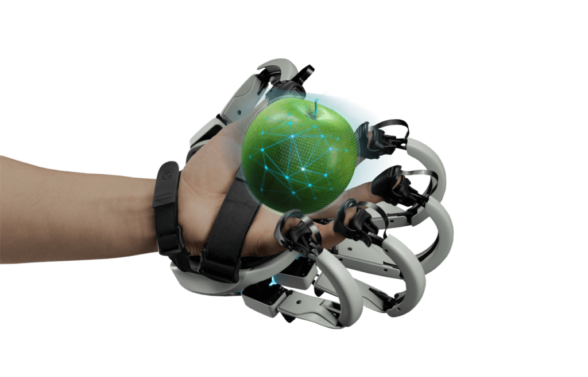

Calidad háptica
La calidad háptica es el grado en que un dispositivo transmite un estímulo táctil usando vibración, tacto y/o fuerza de oposición (Wildenbeest et al., 2013). La RM permite integrar dispositivos que simulen la sensación de tocar y utilizar herramientas que al tacto, sean fidedignas a la sensación real. Simuladores quirúrgicos que empleen un cáteter (Li et al., 2021), simuladores de reanimación que empleen un maniquí (Coduri et al., 2023) son algunos ejemplos donde el usuario "toca" un objeto físico que se conecta al entorno virtual, y su resistencia al movimiento es fidedigna a hacer lo mismo en el mundo real.
En la imagen se presenta un dispositivo que genera resistencia mecánica cuando el usuario "aprieta" la manzana virtual. La calidad háptica sería que tan fidedigna es esta sensación táctil al estímulo real.